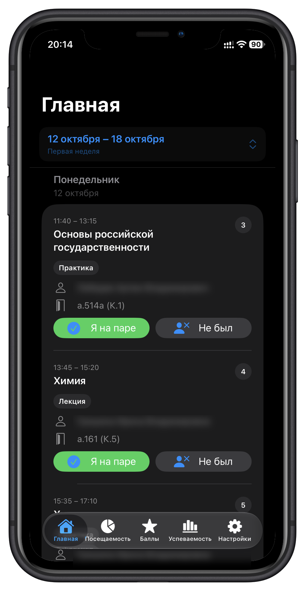

University Stats
Приложение для студентов: расписание, посещаемость, баллы и успеваемость. В Android-версии используются Kotlin и Jetpack Compose, локальное хранение данных и импорт расписания.
Готово
Подробнее о проекте ↗
РАЗРАБОТЧИК(IOS/ANDROID/HTML) · СТАЖИРОВКА / JUNIOR
Изучаю разработку на практике - от мобильных интерфейсов до веба. Открыт к стажировке и Junior-позициям
Смотреть проектыПРИМЕРЫ РАБОТ
Приложение для студентов: расписание, посещаемость, баллы и успеваемость. В Android-версии используются Kotlin и Jetpack Compose, локальное хранение данных и импорт расписания.

Проект для планирования занятий и расписания. Сейчас формирую требования и выбираю подход к реализации.
КОРОТКО ОБО МНЕ
Мне интересно разбираться в продукте целиком: понять задачу, продумать удобный сценарий и довести решение до работающего приложения. Сейчас развиваюсь в мобильной разработке и расширяю навыки в вебе
ЕСТЬ ИНТЕРЕСНЫЙ ПРОЕКТ?
Открыт к стажировкам и Junior-возможностям в мобильной или веб-разработке
Для связи из России используйте mail.ru; для международных предложений - icloud.com